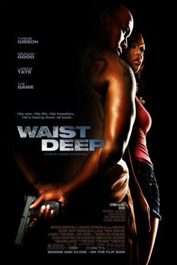
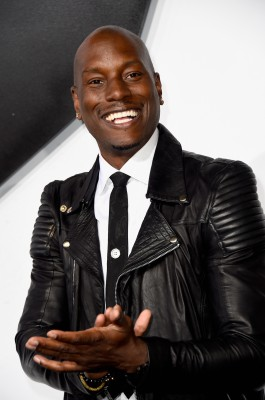
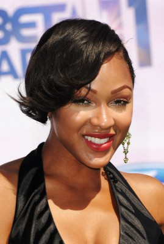
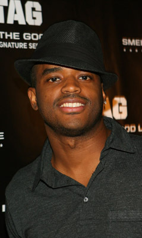
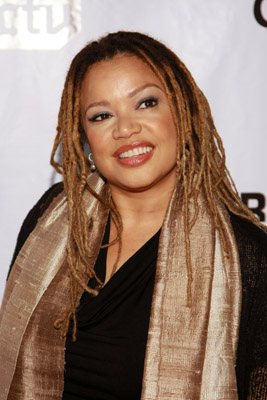
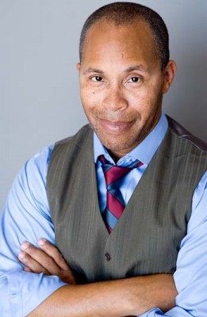
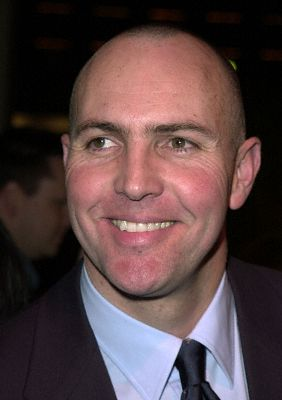

#8218 Bis zum Hals
Alternativ: Waist Deep
 
 IMDB-Wertung: 5.9 / 10
IMDB-Wertung: 5.9 / 10  Metascore: 0
Metascore: 0 
Der Ex-Häftling O2 will endlich ehrlich werden - seinem Sohn Junior zuliebe. Denn sollte O2 als Wiederholungstäter vor Gericht landen, wird er lebenslänglich eingesperrt. Doch seine guten Vorsätze lösen sich in Luft auf, als Autodiebe nicht nur O2s Wagen stehlen, sondern mit ihm auch gleich den kleinen Junior entführen. Der gerät in die Hände des gewissenlosen Drogenbosses Meat und soll nur gegen ein riesiges Lösegeld freikommen. in seiner Not macht sich O2 mit der cleveren Prostituierten Coco und seinem zwielichtigen Cousin Lucky auf die mörderische Jagd nach den Entführten...
Jahr: 2006
Dauer: 96 Minuten
FSK: 16
Land: USA Studio: Focus FeaturesTonspuren: DTS - ,
Untertitel:
Auflösung: 1080p (1920x824) Größe: 5160 MB
Genre: Action, Thriller, Drama, Krimi
Regisseur: Vondie Curtis-Hall
Drehbuch: Vondie Curtis-Hall
Soundtrack: Terence Blanchard
Darsteller:
-  Tyrese Gibson als O2
- Shawn Parr als Newscaster #1
-  Meagan Good als Coco
- Darris Love als Rock
-  Larenz Tate als Lucky
- William Duffy als Newscaster #2
- Game als Meat
- Kimora Lee Simmons als Fencing House Lady
- Paul Terrell Clayton als Black Security Guard
- Earl Minfield als Bank Manager
- Dagmar Stansova als Bank Woman
-  Kasi Lemmons als Angry Black Woman
- Laura Miro als Newscaster #3
- Thommy Abate als Look-A-Like
- Dawn Reavis als Newscaster #4
- Dylan Tays als Newscaster #5
- Yolanda Whittaker als Female Radio DJ
- Cecelia Antoinette als Neighbor (uncredited)
-  Erik Betts als Policeman #2 (uncredited)
- Christopher Carrington als Father (uncredited)
- Julius Denem als P Money (uncredited)
- Aldo Gonzalez als Drug Handler (uncredited)
- Farley Jackson als Meat's Bodyguard #2 (uncredited)
- Janis Jones als Bank Patron (uncredited)
- Jensen LeFlore als Basketball player (uncredited)
- Sean Anthony Moran als Impatient Jacker (uncredited)
- Carolena Sabah als Streetwalker (uncredited)
- Don Salmon als Cop (uncredited)
- Schatar Sapphira als Bank Teller (uncredited)
- Michelle Stevenson als Police Officer (uncredited)
-  Arnold Vosloo als Police Detective #1 (uncredited)
- John West Jr. als Gangster #2 (uncredited)
- Jose Yenque als Det. Tony Sanchez (uncredited)
- Henry Hunter Hall als Junior
- Johnny C. Pruitt als Guard
- DeWayne Turrentine Jr. als Gangster #1
- Ray Bengston als White Security Guard
- Julio Gonzalez als Male Radio DJ
- Michael Eric Dyson als Radio Guest
- Johnny Drocco als Man Leaving in Limo (uncredited)
- Vernon Hawthorne als Meat's Bodyguard #1 (uncredited)
Datei: X:\2006(A-F)\Bis zum Hals (2006, FSK16, 1920x824).mkv seit 07.02.2018
Festplatte: HD 2005(G-Z)-2006(A-Z)
 Es gibt insgesamt 56 Filme in der Gruppe '2006(A-F)'
Es gibt insgesamt 56 Filme in der Gruppe '2006(A-F)'